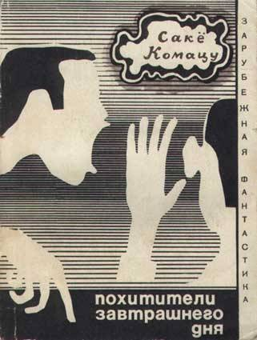

Полгода назад эта книжка появилась в моём списке «что почитать»,
постепенно затерявшись в последних рядах. Среди книг, задерживающихся там,
её можно назвать долгожителем. Но — наконец-то, пришёл и её черёд.
Действие происходит в Японии, Токио, в семидесятых годах. Главный герой,
мелкий служащий, Тода встречает странного коротышку-иностранца Гоэмона.
После этого в Японии начинают происходит странные происшествия, а на Тода
возлагается чуть ли не вся судьба человечества.
В книжке много обсуждаются отношения США и Японии, но сама она, как мне
показалось, немного сказочная, от чего она очень легко читается. Сюжет
постепенно нарастает от стычек крупных фирм до почти мировой войны, а
недлинные главы меняют события, не дав заскучать. После прочтения первых
двух глав, мне показалось, что книга будет держать атмосферу глобальности,
но постепенно это спало, хотя и вернулось к концовке. Это, конечно, не
минус, но какое-то чувство неоправданности ожиданий сопровождало весь
рассказ (во всём виноват Майкл Бэй).